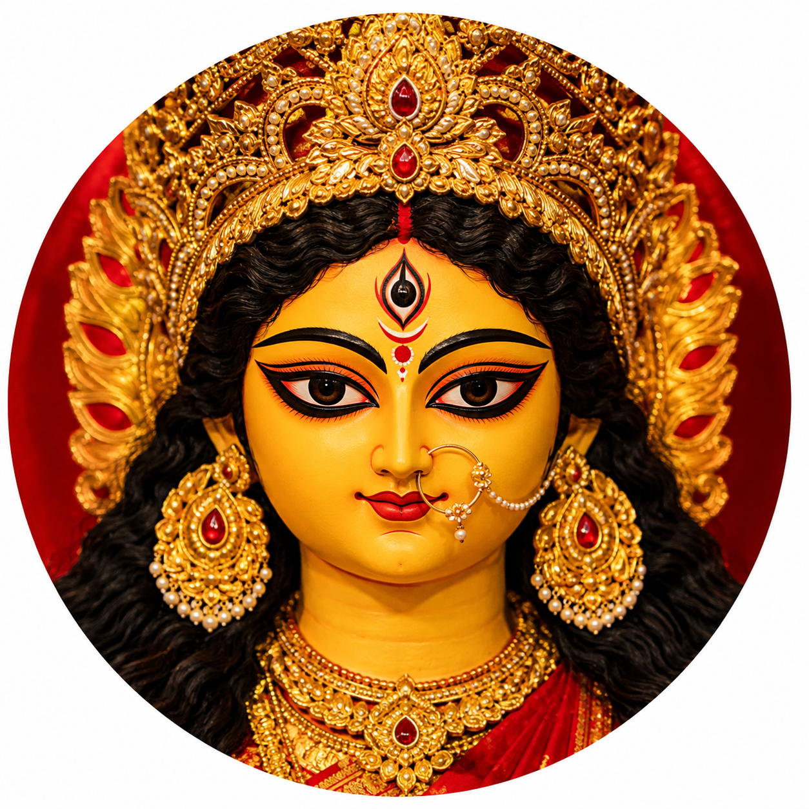
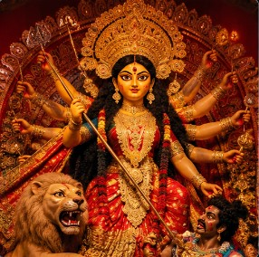
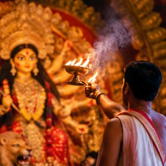
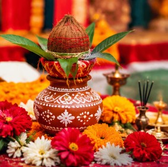
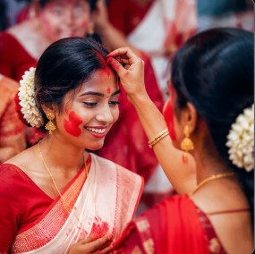

MANDIR
Beautiful Puja Mandir
Discover beautifully decorated Puja mandirs and festive worship spaces.
PUJA DARSHAN
Explore beautiful moments, magnificent mandirs, Maa Durga idols, decorations and cultural celebrations from Bangladesh.
EXPLORE OUR COLLECTION
A visual collection celebrating the beauty, creativity and spirit of Durga Puja.

MANDIR
Discover beautifully decorated Puja mandirs and festive worship spaces.
DURGA IDOL
Beautiful Maa Durga idol photography from Puja celebrations.

DECORATION
Artistic lights, designs and festive Durga Puja decorations.

CELEBRATION
Memorable devotional moments from Durga Puja celebrations.

CULTURE
Traditional music, dance and cultural performances during the festival.

FESTIVE MOMENTS
Special moments captured during Durga Puja celebrations.
PUJA DARSHAN
Explore our video collection for more Puja moments.
Watch Videos